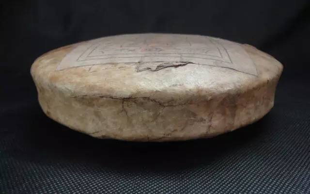

交易中心
交易中心
 交易指南
交易指南
 普洱档案
普洱档案
 普洱资讯
普洱资讯
 下载中心
下载中心
 活动频道
活动频道

解析普洱茶的“穿衣”之道
2015-12-28 09:33 来源：未知
很多人认为，最简陋的茶叶包装就是普洱茶包装了，茶饼用一张棉纸包起来就行了。这种做法甚至让很多外行人认为有点粗糙掉价，普洱茶“穿衣”有点土啊！但是为什么依然坚持这样做呢？
为什么要用棉纸来包装普洱茶饼呢？实用性来讲，原因很简单却很有说服力。因为棉纸的透气性强、能够长期储存而且能够吸附异味。而从情怀来看，棉纸书写的人生，也就是茶饼的一生。
透气性

普洱茶的后期转化过程，需要与空气有一定的接触，这样能够起到促进作用。因此，普洱茶并不需要跟空气进行隔绝，所以它与其他茶对密封性要求高是有所不同的。要与空气接触，那就要有具透气性的包装工具。棉纸，成为了最佳的选择。棉纸生产的原料是山区里面特有的构树皮、野生植物皮、植物胶等，在生产工艺上完全沿用了古代的手工作坊，二十一道工序特制加工，制作成的纸张纤维长。茶饼用棉纸包装，可以不大面积接触空气，又能不密封。
吸附异味
我们常说碳能够吸附污染，起到过滤的作用。而茶饼上的棉纸也是有吸附性强的功能的，它的功能体现在对异味的吸附上。对于茶本身而言，也是有吸附性的，一不留神就会串味，一饼好茶如果遇到这样的事情简直可惜。因此，用棉纸包装，可以在一定范围内起到隔绝异味的作用，让茶能够在它的保护下保持清洁。
耐储存

这里就要谈到抗氧化性了，很多包装物经不起时间和环境的折腾，储存不久就“当机”了。普洱茶有一个特点，就是越陈越香，不太像其他茶，可能面临变质的风险。普洱茶还有很强的收藏价值，存上个十几二十年的情况也有很多。因此，普洱茶茶饼还能够好好儿的出现在眼前，就依赖棉纸的包装了。据说，在保存得当的情况下，即使收藏五十年也没有问题。
棉纸的小清新
对于外行人来说，看到茶叶用棉纸包着，没有华丽的包装确实会产生疑问。但是如果你知道普洱茶饼为什么要用棉纸来包装，就一定会打消各种疑虑了。实际上，在棉纸的包装设计上，茶叶商家们也一直在创新。你会看到各种不同主题的茶饼包装设计，不管是水墨画还是现代漫画，都在传递着它们特有的情怀。
我们常说每一次遇到困境，都要先将自己归零。人的一生其实就是一张白纸，需要自己去将它画满，而画的是什么？多姿多彩的抑或是阴郁柔情的。覆盖在茶饼上的棉纸，在画出美丽的宣传图画之前，也是一张白纸，画出之后便也就是这茶饼的一生了……

- 云南茶山的普洱茶产量有多少？2016-03-08
- 普洱茶守护心脑血管健康，并降血糖!2016-03-04
- 柴为春茶头桩事，臻味号做茶选“柴”有讲究2016-03-02
- 世界各国奇特的饮茶方式2016-03-02
- 古树茶的6个小秘密2016-02-29